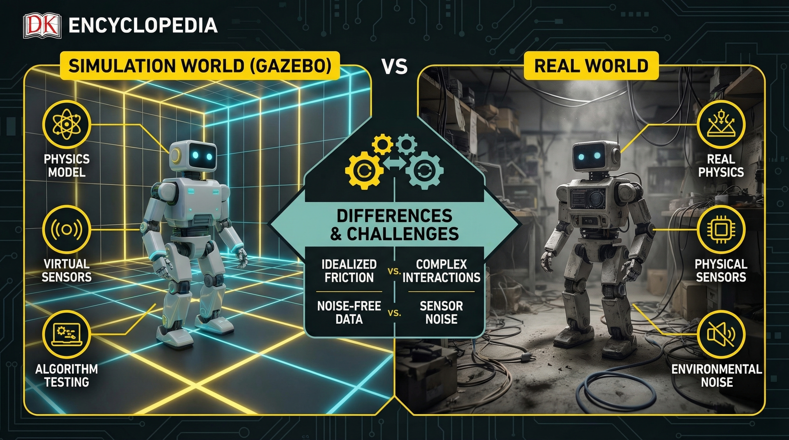

物理模型
理想化: 摩擦力/惯性/碰撞
真实: 非线性摩擦/弹性/磨损
仿真 ≠ 现实
传感器噪声
理想: 精确数据/无延迟
真实: 热噪声/运动模糊/丢帧
需添加噪声模型
统一接口: /cmd_vel (Twist) /odom (Odometry) 相同Topic即可无缝切换
libgazebo_ros_diff_drive.so (差速驱动) libgazebo_ros_laser.so (激光)
World文件: 地面摩擦/重力/时间步长 SDF模型: 惯性矩阵/碰撞边界
Gazebo仿真验证 -> 性能调优 -> 迁移真实机器人 -> 现场测试 -> 迭代优化
仿真节省90%开发成本 | 真实机器人测试高风险高价值

命令: gazebo / ros2 launch gazebo_ros gazebo.launch.py
仿真优势: 安全测试极限工况 / 快速迭代算法 / 并行仿真多个场景 / 零硬件损耗
Bridge: ros2 run ros_gz_bridge parameter_bridge /cmd_vel@geometry_msgs/Twist[gz.msgs.Twist